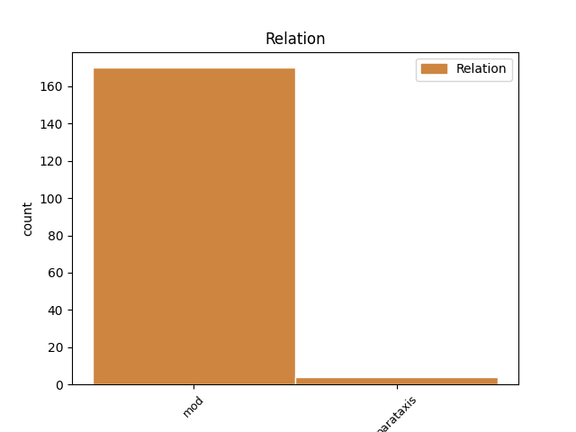
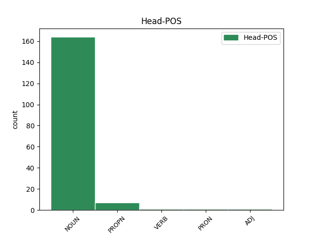
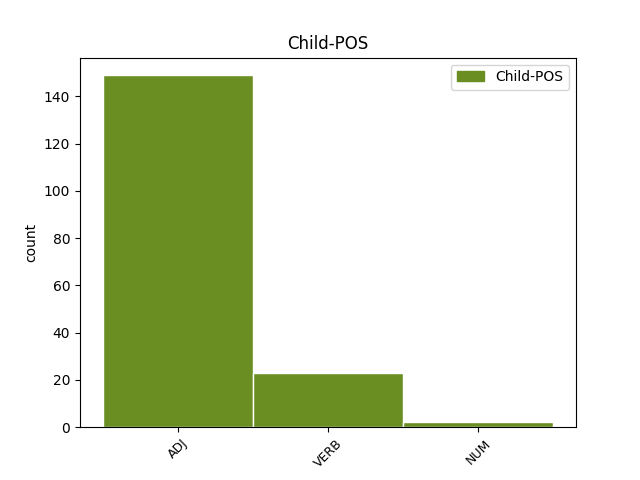

Distribution of features within this leaf



Agreement Rules sorted by frequency.
- When the dependent token is the modifer(mod) of the head token, and the head token is NOUN and the dependent token is ADJ.
1 Sąjūdžio _ _ _ _ 0 _ _ _
2 ir _ _ _ _ 0 _ _ _
3 ankstyvosios ankstyvas ADJ JJL Case=Gen|Definite=Def|Degree=Pos|Gender=Fem|Number=Sing 4 mod _ En=early
4 nepriklausomybės nepriklausomybė NOUN NN Case=Gen|Gender=Fem|Number=Sing 0 _ _ _
5 laikais _ _ _ _ 0 _ _ _
6 kartais _ _ _ _ 0 _ _ _
7 atrodė _ _ _ _ 0 _ _ _
8 , _ _ _ _ 0 _ _ _
9 jog _ _ _ _ 0 _ _ _
10 tie _ _ _ _ 0 _ _ _
11 nesutarimai _ _ _ _ 0 _ _ _
12 pamažu _ _ _ _ 0 _ _ _
13 , _ _ _ _ 0 _ _ _
14 bet _ _ _ _ 0 _ _ _
15 sėkmingai _ _ _ _ 0 _ _ _
16 sprendžiasi _ _ _ _ 0 _ _ _
17 . _ _ _ _ 0 _ _ _
1 Iš _ _ _ _ 0 _ _ _
2 viso _ _ _ _ 0 _ _ _
3 kurti _ _ _ _ 0 _ _ _
4 fetišą _ _ _ _ 0 _ _ _
5 , _ _ _ _ 0 _ _ _
6 stabą _ _ _ _ 0 _ _ _
7 iš _ _ _ _ 0 _ _ _
8 valstybės _ _ _ _ 0 _ _ _
9 – _ _ _ _ 0 _ _ _
10 nepriimtina _ _ _ _ 0 _ _ _
11 praktika _ _ _ _ 0 _ _ _
12 , _ _ _ _ 0 _ _ _
13 nes _ _ _ _ 0 _ _ _
14 ji _ _ _ _ 0 _ _ _
15 pažeidžia _ _ _ _ 0 _ _ _
16 pirmąjį _ _ _ _ 0 _ _ _
17 Dievo _ _ _ _ 0 _ _ _
18 įsakymą _ _ _ _ 0 _ _ _
19 , _ _ _ _ 0 _ _ _
20 privalomą _ _ _ _ 0 _ _ _
21 ir _ _ _ _ 0 _ _ _
22 krikščioniui _ _ _ _ 0 _ _ _
23 , _ _ _ _ 0 _ _ _
24 ir _ _ _ _ 0 _ _ _
25 šiaip _ _ _ _ 0 _ _ _
26 jau _ _ _ _ 0 _ _ _
27 mąstančiam mąstyti VERB VBNL Case=Dat|Definite=Ind|Gender=Masc|Number=Sing|Polarity=Pos|Reflex=No|Tense=Pres|Variant=Full|VerbForm=Part|Voice=Act 28 mod _ En=think
28 žmogui žmogus NOUN NN Case=Dat|Gender=Masc|Number=Sing 0 _ _ _
29 . _ _ _ _ 0 _ _ _
1 Jei _ _ _ _ 0 _ _ _
2 kas _ _ _ _ 0 _ _ _
3 nori _ _ _ _ 0 _ _ _
4 gyventi _ _ _ _ 0 _ _ _
5 tobulai _ _ _ _ 0 _ _ _
6 nepriklausomoje nepriklausomas ADJ JJL Case=Loc|Definite=Ind|Degree=Pos|Gender=Fem|Number=Sing 8 mod _ En=substantive
7 Šiaurės _ _ _ _ 0 _ _ _
8 Korėjoje Korėja PROPN NNP Case=Loc|Gender=Fem|Number=Sing 0 _ _ _
9 , _ _ _ _ 0 _ _ _
10 tegu _ _ _ _ 0 _ _ _
11 gyvena _ _ _ _ 0 _ _ _
12 , _ _ _ _ 0 _ _ _
13 bet _ _ _ _ 0 _ _ _
14 tautai _ _ _ _ 0 _ _ _
15 to _ _ _ _ 0 _ _ _
16 prašom _ _ _ _ 0 _ _ _
17 nesiūlyti _ _ _ _ 0 _ _ _
18 . _ _ _ _ 0 _ _ _
1 Sovietinę _ _ _ _ 0 _ _ _
2 sistemą _ _ _ _ 0 _ _ _
3 reikėjo _ _ _ _ 0 _ _ _
4 atmesti _ _ _ _ 0 _ _ _
5 dėl _ _ _ _ 0 _ _ _
6 trijų trys NUM CD Case=Gen|Gender=Fem 7 mod _ En=three
7 priežasčių priežastis NOUN NN Case=Gen|Gender=Fem|Number=Plur 0 _ _ _
8 . _ _ _ _ 0 _ _ _
1 Jei _ _ _ _ 0 _ _ _
2 būtų _ _ _ _ 0 _ _ _
3 laimėjęs _ _ _ _ 0 _ _ _
4 Strepsiadas _ _ _ _ 0 _ _ _
5 , _ _ _ _ 0 _ _ _
6 tiksliau _ _ _ _ 0 _ _ _
7 , _ _ _ _ 0 _ _ _
8 Strepsiado _ _ _ _ 0 _ _ _
9 idėja _ _ _ _ 0 _ _ _
10 – _ _ _ _ 0 _ _ _
11 ligi _ _ _ _ 0 _ _ _
12 šiol _ _ _ _ 0 _ _ _
13 gyventume _ _ _ _ 0 _ _ _
14 dorų _ _ _ _ 0 _ _ _
15 , _ _ _ _ 0 _ _ _
16 darbščių _ _ _ _ 0 _ _ _
17 , _ _ _ _ 0 _ _ _
18 patriarchališkų _ _ _ _ 0 _ _ _
19 , _ _ _ _ 0 _ _ _
20 tėvynę _ _ _ _ 0 _ _ _
21 mylinčių _ _ _ _ 0 _ _ _
22 žemdirbių _ _ _ _ 0 _ _ _
23 bendruomenėse _ _ _ _ 0 _ _ _
24 , _ _ _ _ 0 _ _ _
25 nieko _ _ _ _ 0 _ _ _
26 nežinančiose žinoti VERB VBNL Case=Loc|Definite=Ind|Gender=Fem|Number=Plur|Polarity=Neg|Reflex=No|Tense=Pres|VerbForm=Part|Voice=Act 0 _ _ _
27 ir _ _ _ _ 0 _ _ _
28 nenorinčiose _ _ _ _ 0 _ _ _
29 žinoti _ _ _ _ 0 _ _ _
30 apie _ _ _ _ 0 _ _ _
31 tolimesnius _ _ _ _ 0 _ _ _
32 kraštus _ _ _ _ 0 _ _ _
33 ir _ _ _ _ 0 _ _ _
34 visatą _ _ _ _ 0 _ _ _
35 – _ _ _ _ 0 _ _ _
36 beje _ _ _ _ 0 _ _ _
37 , _ _ _ _ 0 _ _ _
38 apsuptose apsupti VERB VBNL Case=Loc|Definite=Ind|Gender=Fem|Number=Plur|Polarity=Pos|Reflex=No|Tense=Past|VerbForm=Part|Voice=Act 26 parataxis _ En=surround
39 nekenčiamų _ _ _ _ 0 _ _ _
40 ir _ _ _ _ 0 _ _ _
41 iš _ _ _ _ 0 _ _ _
42 tikro _ _ _ _ 0 _ _ _
43 pavojingų _ _ _ _ 0 _ _ _
44 barbarų _ _ _ _ 0 _ _ _
45 genčių _ _ _ _ 0 _ _ _
46 . _ _ _ _ 0 _ _ _
1 Tikras tikras ADJ JJL Case=Nom|Definite=Ind|Degree=Pos|Gender=Masc|Number=Sing 2 mod _ En=true
2 lietuvis lietuvis ADJ JJL Case=Nom|Definite=Ind|Degree=Pos|Gender=Masc|Number=Sing 0 _ _ _
3 yra _ _ _ _ 0 _ _ _
4 tik _ _ _ _ 0 _ _ _
5 tas _ _ _ _ 0 _ _ _
6 , _ _ _ _ 0 _ _ _
7 kuris _ _ _ _ 0 _ _ _
8 nemėgsta _ _ _ _ 0 _ _ _
9 , _ _ _ _ 0 _ _ _
10 o _ _ _ _ 0 _ _ _
11 dar _ _ _ _ 0 _ _ _
12 geriau _ _ _ _ 0 _ _ _
13 nekenčia _ _ _ _ 0 _ _ _
14 rusų _ _ _ _ 0 _ _ _
15 , _ _ _ _ 0 _ _ _
16 lenkų _ _ _ _ 0 _ _ _
17 , _ _ _ _ 0 _ _ _
18 žydų _ _ _ _ 0 _ _ _
19 , _ _ _ _ 0 _ _ _
20 taip _ _ _ _ 0 _ _ _
21 pat _ _ _ _ 0 _ _ _
22 ir _ _ _ _ 0 _ _ _
23 vakariečių _ _ _ _ 0 _ _ _
24 , _ _ _ _ 0 _ _ _
25 mėgsta _ _ _ _ 0 _ _ _
26 nebent _ _ _ _ 0 _ _ _
27 palestiniečius _ _ _ _ 0 _ _ _
28 ( _ _ _ _ 0 _ _ _
29 beje _ _ _ _ 0 _ _ _
30 , _ _ _ _ 0 _ _ _
31 nesunku _ _ _ _ 0 _ _ _
32 įsivaizduoti _ _ _ _ 0 _ _ _
33 , _ _ _ _ 0 _ _ _
34 ką _ _ _ _ 0 _ _ _
35 mūsų _ _ _ _ 0 _ _ _
36 patriotai _ _ _ _ 0 _ _ _
37 pradėtų _ _ _ _ 0 _ _ _
38 sakyti _ _ _ _ 0 _ _ _
39 apie _ _ _ _ 0 _ _ _
40 palestiniečius _ _ _ _ 0 _ _ _
41 , _ _ _ _ 0 _ _ _
42 jeigu _ _ _ _ 0 _ _ _
43 su _ _ _ _ 0 _ _ _
44 jais _ _ _ _ 0 _ _ _
45 susidurtų _ _ _ _ 0 _ _ _
46 kasdienybėje _ _ _ _ 0 _ _ _
47 , _ _ _ _ 0 _ _ _
48 kaip _ _ _ _ 0 _ _ _
49 susidūrė _ _ _ _ 0 _ _ _
50 su _ _ _ _ 0 _ _ _
51 čečėnais _ _ _ _ 0 _ _ _
52 ) _ _ _ _ 0 _ _ _
53 . _ _ _ _ 0 _ _ _
1 Deja _ _ _ _ 0 _ _ _
2 , _ _ _ _ 0 _ _ _
3 neatsitiko _ _ _ _ 0 _ _ _
4 nieko niekas PRON DT Case=Gen|Gender=Masc|Number=Sing 0 _ _ _
5 ypatingo ypatingas ADJ JJL Case=Gen|Definite=Ind|Degree=Pos|Gender=Masc|Number=Sing 4 mod _ En=interesting|SpaceAfter=No
6 : _ _ _ _ 0 _ _ _
7 panašios _ _ _ _ 0 _ _ _
8 tendencijos _ _ _ _ 0 _ _ _
9 ryškėjo _ _ _ _ 0 _ _ _
10 dar _ _ _ _ 0 _ _ _
11 Sąjūdžio _ _ _ _ 0 _ _ _
12 laikais _ _ _ _ 0 _ _ _
13 , _ _ _ _ 0 _ _ _
14 nors _ _ _ _ 0 _ _ _
15 tad _ _ _ _ 0 _ _ _
16 laisvės _ _ _ _ 0 _ _ _
17 siekimas _ _ _ _ 0 _ _ _
18 buvo _ _ _ _ 0 _ _ _
19 toks _ _ _ _ 0 _ _ _
20 uždegantis _ _ _ _ 0 _ _ _
21 ir _ _ _ _ 0 _ _ _
22 patrauklus _ _ _ _ 0 _ _ _
23 , _ _ _ _ 0 _ _ _
24 kad _ _ _ _ 0 _ _ _
25 norėjosi _ _ _ _ 0 _ _ _
26 jų _ _ _ _ 0 _ _ _
27 nepastebėti _ _ _ _ 0 _ _ _
28 . _ _ _ _ 0 _ _ _
1 Beje _ _ _ _ 0 _ _ _
2 , _ _ _ _ 0 _ _ _
3 ateityje ateitis NOUN NN Case=Loc|Gender=Fem|Number=Sing 0 _ _ _
4 ( _ _ _ _ 0 _ _ _
5 tiesa _ _ _ _ 0 _ _ _
6 , _ _ _ _ 0 _ _ _
7 gana _ _ _ _ 0 _ _ _
8 tolimoje tolimas ADJ JJL Case=Loc|Definite=Ind|Degree=Pos|Gender=Fem|Number=Sing 3 parataxis _ En=distant|SpaceAfter=No
9 ) _ _ _ _ 0 _ _ _
10 nepriklausomas _ _ _ _ 0 _ _ _
11 valstybes _ _ _ _ 0 _ _ _
12 iš _ _ _ _ 0 _ _ _
13 viso _ _ _ _ 0 _ _ _
14 galbūt _ _ _ _ 0 _ _ _
15 pavaduos _ _ _ _ 0 _ _ _
16 globalinė _ _ _ _ 0 _ _ _
17 sąjungą _ _ _ _ 0 _ _ _
18 , _ _ _ _ 0 _ _ _
19 kurios _ _ _ _ 0 _ _ _
20 bruožai _ _ _ _ 0 _ _ _
21 pastebimi _ _ _ _ 0 _ _ _
22 ir _ _ _ _ 0 _ _ _
23 dabar _ _ _ _ 0 _ _ _
24 : _ _ _ _ 0 _ _ _
25 tai _ _ _ _ 0 _ _ _
26 anaiptol _ _ _ _ 0 _ _ _
27 nereiškia _ _ _ _ 0 _ _ _
28 , _ _ _ _ 0 _ _ _
29 kad _ _ _ _ 0 _ _ _
30 išnyks _ _ _ _ 0 _ _ _
31 tautiniai _ _ _ _ 0 _ _ _
32 skirtingumai _ _ _ _ 0 _ _ _
33 , _ _ _ _ 0 _ _ _
34 kalbos _ _ _ _ 0 _ _ _
35 ir _ _ _ _ 0 _ _ _
36 tradicijos _ _ _ _ 0 _ _ _
37 . _ _ _ _ 0 _ _ _
Disagree Examples:
1 Ši _ _ _ _ 0 _ _ _
2 kasmetinė _ _ _ _ 0 _ _ _
3 nominacija _ _ _ _ 0 _ _ _
4 skiriama _ _ _ _ 0 _ _ _
5 asmeniui _ _ _ _ 0 _ _ _
6 , _ _ _ _ 0 _ _ _
7 stojusiam _ _ _ _ 0 _ _ _
8 prieš _ _ _ _ 0 _ _ _
9 ksenofobijos _ _ _ _ 0 _ _ _
10 bei _ _ _ _ 0 _ _ _
11 antisemitizmo _ _ _ _ 0 _ _ _
12 , _ _ _ _ 0 _ _ _
13 kitaminčių _ _ _ _ 0 _ _ _
14 , _ _ _ _ 0 _ _ _
15 kitatikių _ _ _ _ 0 _ _ _
16 bei _ _ _ _ 0 _ _ _
17 kitataučių _ _ _ _ 0 _ _ _
18 persekiojimą _ _ _ _ 0 _ _ _
19 , _ _ _ _ 0 _ _ _
20 pasisakiusiam _ _ _ _ 0 _ _ _
21 prieš _ _ _ _ 0 _ _ _
22 smurto _ _ _ _ 0 _ _ _
23 , _ _ _ _ 0 _ _ _
24 prievartos _ _ _ _ 0 _ _ _
25 ir _ _ _ _ 0 _ _ _
26 radikalizmo _ _ _ _ 0 _ _ _
27 apraiškas apraiška NOUN NN Case=Acc|Gender=Fem|Number=Plur 0 _ _ _
28 visuomeniniame visuomeninis ADJ JJL Case=Loc|Definite=Ind|Degree=Pos|Gender=Masc|Number=Sing 27 mod _ En=public
29 Lietuvos _ _ _ _ 0 _ _ _
30 gyvenime _ _ _ _ 0 _ _ _
31 . _ _ _ _ 0 _ _ _
1 423 _ _ _ _ 0 _ _ _
2 metais _ _ _ _ 0 _ _ _
3 prieš _ _ _ _ 0 _ _ _
4 Kristaus _ _ _ _ 0 _ _ _
5 gimimą _ _ _ _ 0 _ _ _
6 , _ _ _ _ 0 _ _ _
7 per _ _ _ _ 0 _ _ _
8 Didžiųjų didis ADJ JJL Case=Gen|Definite=Def|Degree=Pos|Gender=Masc|Number=Plur 9 mod _ En=great
9 Dionizijų Dionizius PROPN NNP Case=Gen|Gender=Fem|Number=Plur 0 _ _ _
10 šventę _ _ _ _ 0 _ _ _
11 , _ _ _ _ 0 _ _ _
12 Atėnuose _ _ _ _ 0 _ _ _
13 buvo _ _ _ _ 0 _ _ _
14 pastatyta _ _ _ _ 0 _ _ _
15 Aristofano _ _ _ _ 0 _ _ _
16 komedija _ _ _ _ 0 _ _ _
17 „ _ _ _ _ 0 _ _ _
18 Debesys _ _ _ _ 0 _ _ _
19 “ _ _ _ _ 0 _ _ _
20 . _ _ _ _ 0 _ _ _
1 Strepsiadas _ _ _ _ 0 _ _ _
2 – _ _ _ _ 0 _ _ _
3 patriarchališkai patriarchališkas ADJ JJL Case=Dat|Definite=Ind|Degree=Pos|Gender=Fem|Number=Sing 5 mod _ En=partriarchal
4 doras _ _ _ _ 0 _ _ _
5 žemdirbys žemdirbys NOUN NN Case=Nom|Gender=Masc|Number=Sing 0 _ _ _
6 , _ _ _ _ 0 _ _ _
7 kurio _ _ _ _ 0 _ _ _
8 sūnus _ _ _ _ 0 _ _ _
9 , _ _ _ _ 0 _ _ _
10 kaip _ _ _ _ 0 _ _ _
11 paprastai _ _ _ _ 0 _ _ _
12 būna _ _ _ _ 0 _ _ _
13 , _ _ _ _ 0 _ _ _
14 jau _ _ _ _ 0 _ _ _
15 pasidavė _ _ _ _ 0 _ _ _
16 naujoms _ _ _ _ 0 _ _ _
17 madoms _ _ _ _ 0 _ _ _
18 ir _ _ _ _ 0 _ _ _
19 dėl _ _ _ _ 0 _ _ _
20 to _ _ _ _ 0 _ _ _
21 kelia _ _ _ _ 0 _ _ _
22 tėvui _ _ _ _ 0 _ _ _
23 nerimą _ _ _ _ 0 _ _ _
24 . _ _ _ _ 0 _ _ _
1 Mes _ _ _ _ 0 _ _ _
2 , _ _ _ _ 0 _ _ _
3 apskritai _ _ _ _ 0 _ _ _
4 paėmus _ _ _ _ 0 _ _ _
5 , _ _ _ _ 0 _ _ _
6 gyvename _ _ _ _ 0 _ _ _
7 jo _ _ _ _ 0 _ _ _
8 pasaulyje _ _ _ _ 0 _ _ _
9 – _ _ _ _ 0 _ _ _
10 skepticizmo _ _ _ _ 0 _ _ _
11 , _ _ _ _ 0 _ _ _
12 laisvo _ _ _ _ 0 _ _ _
13 mąstymo _ _ _ _ 0 _ _ _
14 , _ _ _ _ 0 _ _ _
15 tradicinių tradicinis ADJ JJL Case=Gen|Definite=Ind|Degree=Pos|Gender=Masc|Number=Plur 16 mod _ En=traditional
16 vertybių vertybė NOUN NN Case=Gen|Gender=Fem|Number=Plur 0 _ _ _
17 kritikos _ _ _ _ 0 _ _ _
18 , _ _ _ _ 0 _ _ _
19 globalizmo _ _ _ _ 0 _ _ _
20 pasaulyje _ _ _ _ 0 _ _ _
21 . _ _ _ _ 0 _ _ _
1 Tikras _ _ _ _ 0 _ _ _
2 lietuvis _ _ _ _ 0 _ _ _
3 yra _ _ _ _ 0 _ _ _
4 tik _ _ _ _ 0 _ _ _
5 tas _ _ _ _ 0 _ _ _
6 , _ _ _ _ 0 _ _ _
7 kuris _ _ _ _ 0 _ _ _
8 nemėgsta _ _ _ _ 0 _ _ _
9 , _ _ _ _ 0 _ _ _
10 o _ _ _ _ 0 _ _ _
11 dar _ _ _ _ 0 _ _ _
12 geriau _ _ _ _ 0 _ _ _
13 nekenčia _ _ _ _ 0 _ _ _
14 rusų _ _ _ _ 0 _ _ _
15 , _ _ _ _ 0 _ _ _
16 lenkų _ _ _ _ 0 _ _ _
17 , _ _ _ _ 0 _ _ _
18 žydų _ _ _ _ 0 _ _ _
19 , _ _ _ _ 0 _ _ _
20 taip _ _ _ _ 0 _ _ _
21 pat _ _ _ _ 0 _ _ _
22 ir _ _ _ _ 0 _ _ _
23 vakariečių _ _ _ _ 0 _ _ _
24 , _ _ _ _ 0 _ _ _
25 mėgsta _ _ _ _ 0 _ _ _
26 nebent _ _ _ _ 0 _ _ _
27 palestiniečius palestinietis NOUN NN Case=Acc|Gender=Masc|Number=Plur 0 _ _ _
28 ( _ _ _ _ 0 _ _ _
29 beje _ _ _ _ 0 _ _ _
30 , _ _ _ _ 0 _ _ _
31 nesunku nesunkus ADJ PRED Definite=Ind|Degree=Pos|Gender=Neut|Polarity=Neg 27 parataxis _ En=not_difficult
32 įsivaizduoti _ _ _ _ 0 _ _ _
33 , _ _ _ _ 0 _ _ _
34 ką _ _ _ _ 0 _ _ _
35 mūsų _ _ _ _ 0 _ _ _
36 patriotai _ _ _ _ 0 _ _ _
37 pradėtų _ _ _ _ 0 _ _ _
38 sakyti _ _ _ _ 0 _ _ _
39 apie _ _ _ _ 0 _ _ _
40 palestiniečius _ _ _ _ 0 _ _ _
41 , _ _ _ _ 0 _ _ _
42 jeigu _ _ _ _ 0 _ _ _
43 su _ _ _ _ 0 _ _ _
44 jais _ _ _ _ 0 _ _ _
45 susidurtų _ _ _ _ 0 _ _ _
46 kasdienybėje _ _ _ _ 0 _ _ _
47 , _ _ _ _ 0 _ _ _
48 kaip _ _ _ _ 0 _ _ _
49 susidūrė _ _ _ _ 0 _ _ _
50 su _ _ _ _ 0 _ _ _
51 čečėnais _ _ _ _ 0 _ _ _
52 ) _ _ _ _ 0 _ _ _
53 . _ _ _ _ 0 _ _ _